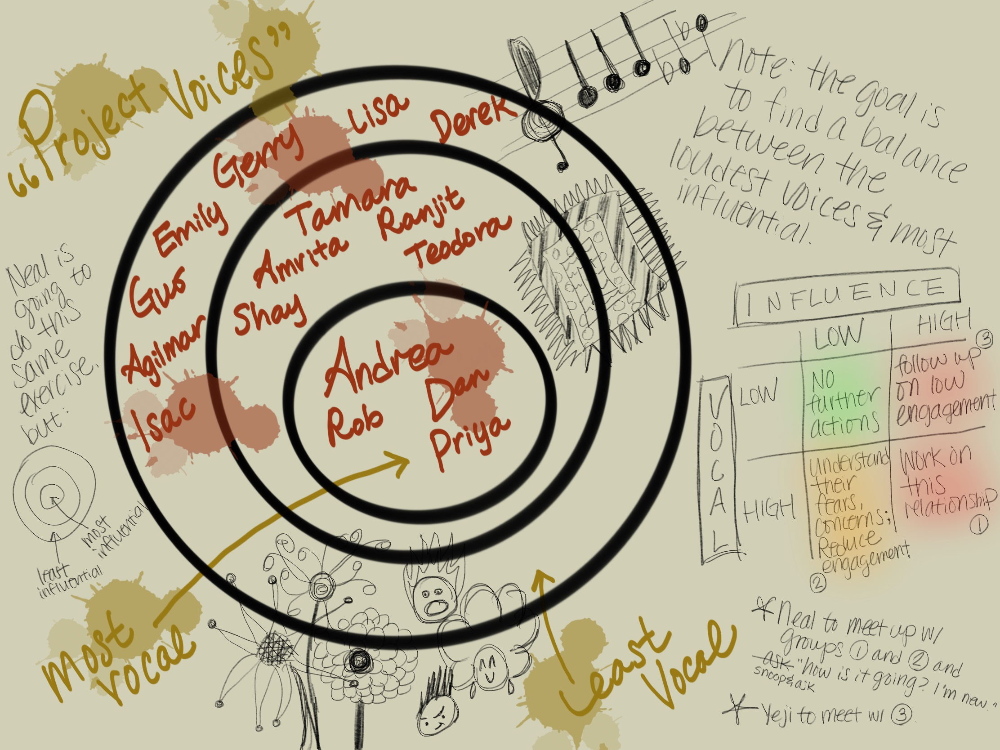

I used to think one-on-one meetings were tedious and ineffective. I used to shout into the void, “send it to me in an email! Or in slack! Stop wasting my time!” That is until I had two one-on-ones within a span of a month that made me reconsider.
The first revelation came after my manager, let’s call him “Kenny,” submitted his notice. My project wasn’t going well and team attrition and morale were dismal. I was miserable.
I was puzzled as I headed into my final one-on-one with Kenny. Our usual agenda of status updates and silent head nods didn’t seem like a good use of our time. But having some parting thoughts from an outgoing manager seemed beneficial.
Kenny kicked it off. “The stakeholders don’t like you. As a product manager, you need to be the glue for the project. You should be more personable. If I were you, I’d take them out for drinks. Hope all goes well with your future endeavors.”
I was speechless. I ended our relationship with a curt, “okay, I’ll think about it.”
At the time, I realized the following: First, one-one-ones are tedious, ineffective, and cruel. Second, it’s better to have one-on-ones without a paper trail. This way, you’ve got plausible deniability of your cruelty.
My new boss, let’s call him “Neal,” came in and started holding meet-and-greets with his teams and stakeholders. Bitter, broken, and dejected, I put off talking to Neal alone for as long as I could. I thought, “He heard the feedback already. He’s gonna hear what I have to say as a pathetic excuse. I need to have a win to debunk the hearsay. I’ll avoid him until then.”
This maneuver only lasted a few weeks after he settled in. He scheduled a one-on-one with me which threw me into full panic mode. Days leading up to the meeting, I penned what I would say so I wouldn’t sound defensive. I also repeated to myself how I wouldn’t bring up the elephant in the room unless he broached it first.
Head Game: Your anxiety and paranoia are steering you in the right direction. People are easily swayed into believing everything they hear and they talk badly about you. Always.
Reality: Pronia is when you feel like people are conspiring to cheer you on and help you succeed. The fact of the matter is, the world isn’t quite black and white. No good or bad. But for every awful person setting off your paranoia, there’s someone who’s in your court. Seek those people out instead.
“What’s going on?” he said.
I launched into a project status update, per usual. I can’t remember the exact word-vomit, but it was something like, “The project is behind schedule. We’ve hit unforeseen complexities with…”
“No. I heard what others had to say. What’s going on?” I went off script. “Stakeholders don’t like me. This project isn’t going well.” At that moment, I thought, “Screw it. I can find another job.”
“How are you feeling?”
“What?” This was a foreign question to me, and I didn’t know how to answer it. At the time I thought, “I’m wiping away tears like a schoolgirl. In front of a new boss. Who only knows me through negative feedback. And I all but confirmed it to be true. He’s either dumb or satisfying some weird power move. I feel like utter shit. What do you think?” He glanced at me, waited for a beat, and started to speak.
“If one person can cause a project to spiral, then it’s not set up very well, is it?”
Head Game: If you drop the ball, the team will fail. People will blame you. That’s why 8-hour work day isn’t enough, and you have to be a team player.
Reality: It’s a team effort. From those who are executing to those who manage and lead. Everyone has a role to play, but the burden and responsibility must be shared. If it isn’t, it’s an organizational issue. So a be a team player, sign off, and prioritize your mental health.
Neal glossed over his rhetorical question, got up to the whiteboard, and motioned me to do the same. He asked me to draw concentric circles of stakeholders. The most vocal stakeholders went in the center circle. The least vocal individuals occupied the outer edges. He tasked himself with the same exercise. With his circles, the most influential individuals—the decision makers, the one who controls the budget—made up the core. The least influential members surrounded the outer rim.

He explained that comparing our two sets of concentric circles will help us understand if we are listening to the right people. Neal also informed me that the chart should identify who should be talking with whom. “We can visualize actual versus perceived influence. Then you and I can divide and conquer to win people over at different levels of the organization. That’s how we’ll get our project in a better state.”
The one-on-ones following our meet-and-greet mirrored this format. He would first ask me what was going on. Then he would ask how I was feeling. We would then jump to constructive brainstorming followed by action items assigned to both of us. Often, Neal would check his notes and follow up on where we last left off.
A few weeks in, he brought up how “work is no different than high school with cliques and bullies sometimes. It would help to get to know the people you’re working with outside of work. Only if you’re comfortable.”
“I’m not.”
“Then don’t. That’s fine.”
It was the same suggestion that Kenny had brought up mere weeks ago. Only, with Neal, it didn’t seem so dissatisfying. I didn’t feel indignant. He respected the boundaries I set for myself without judgment.
After a conversation with Kenny, who I thought knew me well, I felt alone and worthless. But after a conversation with Neal, who didn’t know me at all, I felt supported, cared for, and respected. With Neal, I learned that you don’t have to know the individual personally to support and coach them. Compassion and care is all you need to get going.
Head Game: You need to know your direct report personally in order to best support, help, and coach.
Reality: You don’t need to know someone personally to want the best for them. You just have to care. This also means you don’t have to be friends with your direct reports or colleagues to wish them the best and help them grow.
As I reclaimed my time, voice, and confidence in one-on-ones with Neal, we seldom had tactical “shop” talk. Status updates became irrelevant; he trusted me to make the right day-to-day decisions. Instead, our time together became a chance to exchange, expand, and align on our thoughts about the team vision, strategy, and our roadmap.
Don’t get me wrong, just send it to me in an email is still very much my de facto sentiment for most meetings. Email, Slack, and Team messages help winnow the simple exchanges. One-on-ones are then left with private, thought-provoking conversations. Or serve as a much-needed intermission to catch a breath and chat about something silly. With the right approach, one-on-ones can be the best opportunity for both parties to learn, grow, and care for one another.
If you found my blog helpful, please consider adding to my book fund. You can also make requests on what I should read next!